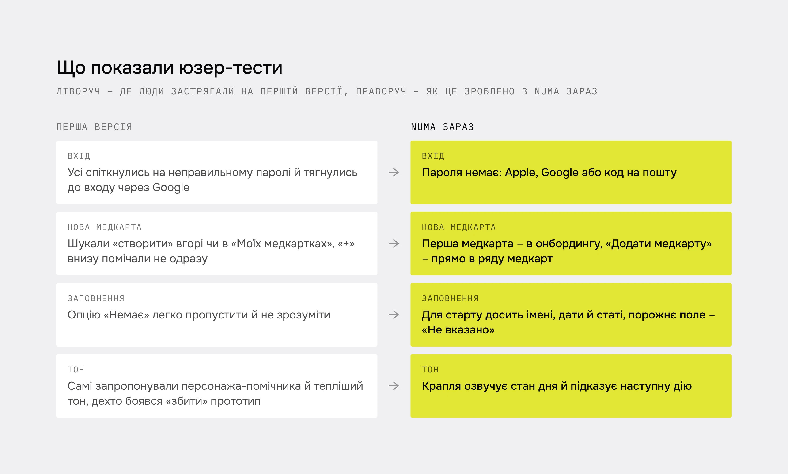
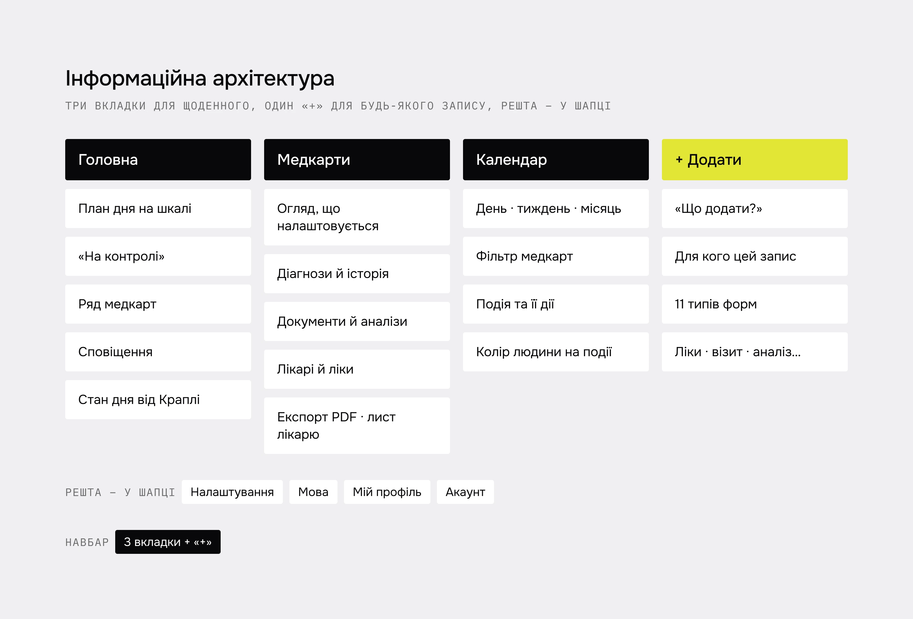

Мамі треба щодня тримати в голові ліки кількох дітей і візити, а на прийомі – за хвилину знайти потрібний аналіз і віддати лікарю.
Мета – один застосунок, де щоденний план і медична історія живуть поруч, але не змішуються. Обмеження: працюю сама, без замовника, а дані – медичні й дитячі.
Що показали опитування й тести
Головна проблема – легко зберігати й знаходити медичні записи
73% досі тримають паперові картки й довідкиХочуть ділитися медичними даними
→ рішення 04: медкарта для лікаряХочуть зберігати дані членів сімʼї
32% – окремо профілі дітей → рішення 02: «Для кого»Не ведуть записи в електронному вигляді, але почали б, якщо буде зручно й безпечно
→ рішення 03: вхід без пароля і згода окремим кроком65% раніше не користувалися медичними застосунками, тож простота важить не менше за функції: її обрали 68%, безпеку – 57%.
Опитування 37 людей показало, що саме зберігати і чого бракує, 6 глибинних інтервʼю дали персони й CJM, а юзер-тести першої версії показали, де люди застрягали. Навігацію більшість пройшла без допомоги – змінювати довелося вхід, створення медкарти й тон.

Структура
Три вкладки для щоденного – Головна, Медкарти, Календар – і один «+» для будь-якого запису. У MVP – медкарти, план дня, документи й лист лікарю. Спільний доступ і Numa AI свідомо відклала.

Головна показує день, а не меню
- Чому
- Головний сценарій з інтервʼю: мама щодня тримає в голові ліки кількох дітей, свої нагадування й візити. На тестах першої версії учасники самі попросили персонажа-помічника й тепліший тон.
- Що зробила
- План на шкалі дня з позначкою «зараз», пропущене підсвічується. Справи без часу – в окремому блоці «На контролі».
- Результат
- Зʼявився маскот-крапля, який озвучує стан дня: «Не бачу відмітки о 08:00». Головна відповідає на «що зараз», а не веде в розділи.
СтатусМаскота додала після тестів першої версії. План дня – у прототипі MVP.

Один «+» для 11 типів записів
- Чому
- Записи належать різним людям. Кнопка «додати» в кожному розділі змусила б спершу шукати, куди класти запис.
- Що зробила
- «Що додати?» → «Для кого» → форма. Людина думає про подію, а не про те, де її зберігати.
- Результат
- Усі 11 типів додаються одним шляхом – без окремої кнопки в кожній медкарті й розділі.
СтатусРішення в прототипі MVP. Окремо з людьми ще не перевіряла.

Вхід без пароля, згода – окремим кроком
- Чому
- На тестах першої версії на паролі спіткнулися всі учасники. А дані дитячі й медичні – згода не може бути дрібним шрифтом.
- Що зробила
- Apple, Google або код на пошту. Згода й підтвердження 18+ перед першою медкартою.
- Результат
- Перша медкарта стартує з трьох полів – імʼя, дата народження, стать. Решту людина додає поступово.
СтатусПароль прибрала після тестів. Новий онбординг із 7 кроків з людьми ще не перевіряла.

Медкарту можна віддати лікарю
- Чому
- У кожної дитини своє важливе, а на візиті інформацію треба швидко передати, інколи іншою мовою.
- Що зробила
- Розділи огляду налаштовуються, експорт збирає PDF, лист лікарю підставляє контакти й допомагає з перекладом.
- Результат
- Медкарта стала документом для візиту, а не лише архівом: PDF і лист лікарю з одного екрана.
СтатусВходить у рамку MVP, з людьми ще не перевіряла.

Стани й система
Третина екранів – не щасливий шлях: порожні стани, помилки з поясненням, підтвердження незворотних дій, системні сповіщення. Усе зібране з UI kit: 34 компоненти, 4 колекції змінних, 19 текстових стилів.

- 01
Збираю застосунок сама разом з Claude: Expo і Supabase з даними в EU.
- 02
Перевірити з людьми один «+» і медкарту для лікаря – їх ще не тестувала.
- 03
Після MVP – Numa AI: структуру медкарти вже закладаю так, щоб кожен факт мав джерело.